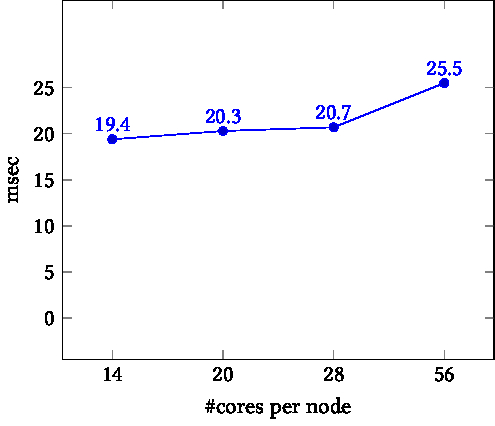
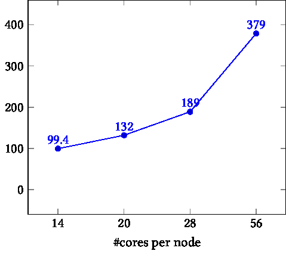
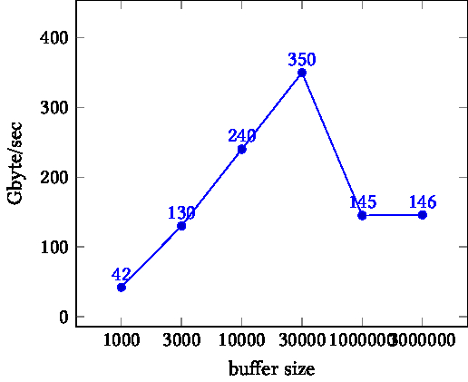
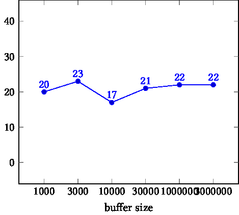

crumb trail: > mpi-examples > Bandwidth and halfbandwidth
Bandwidth is the quantity that measures the number of bytes per second that can go through a connection. This definition seems straightforward, but commes with many footnotes.
A useful measure comes from asking what bandwdith is achievable if all processes are either sending or receiving. As a further refinement, we ask what the least favorable choice is for the communicating pairs:
Halfbandwidth is defined as the minimum total bandwidth, over all possible choices of splitting the processes into a sending and receiving half.
FIGURE 16.1: Intra and inter schemes for bandwidth
Figure~ 16.1 illustrates the `intra' (left) and `inter' (right) scheme for letting all processes communicate in pairs. With intra-communication, the messages do not rely on the network so we expect to measure high bandwidth. With inter-communication, all messages go through the network and we expect to measure a lower number.
However, there are more issues to explore, which we will now do.
First of all we need to find pairs of processes. Consecutive pairs:
// halfbandwidth.cxx int sender = procid - procid%2, receiver = sender+1;
int sender = procid<halfprocs ? procid : procid-halfprocs, receiver = sender + halfprocs;


FIGURE 16.2: Time as a function of core count. Left: on node. Right: between nodes.
The halfbandwidth is measured as the total number of bytes sent divided by the total time. Both numbers are measured outside a repeat loop that does each transaction 100 times.
auto duration = myclock::now()-start_time; auto microsec_duration = std::chrono::duration_cast<std::chrono::microseconds>(duration); int total_ping_count; MPI_Allreduce(&pingcount,&total_ping_count,1,MPI_INT,MPI_SUM,comm); long bytes = buffersize * sizeof(double) * total_ping_count; float fsec = microsec_duration.count() * 1.e-6, halfbandwidth = bytes / fsec;
In the left graph of figure 16.2 we see that the time for $P/2$ simultaneous pingpongs stays fairly constant. This reflects the fact that, on node, the ping pong operations are data copies, which proceed simultaneously. Thus, the time is independent of the number of cores that are moving data. The exception is the final data point: with all cores active we take up more than the available bandwidth on the node.
In the right graph, each pingpong is inter-node, going through the network. Here we see the runtime go up linearly with the number of pingpongs, or somewhat worse than that. This reflects the fact that network transfers are done sequentially. (Actually, message can be broken up in packets, as long as they satisfy MPI message semantics. This does not alter our argument.)


FIGURE 16.3: Bandwidth as a function of buffer size. Left: on node. Right: between nodes.
Next we explore the influence of the buffer size on performance. The right graph in figure 16.3 show that inter-node bandwidth is almost independent of the buffer size. This means that even our smallest buffer is large enough to overcome any MPI startup cost.
On other hand, the left graph shows a more complicated pattern. Initially, the bandwidth increases, possibly reflecting the decreasing importance of MPI startup. For the final data points, however, performance drops again. This is due to the fact that the data size overflows cache size, and we are dominated by bandwidth from memory, rather than cache.